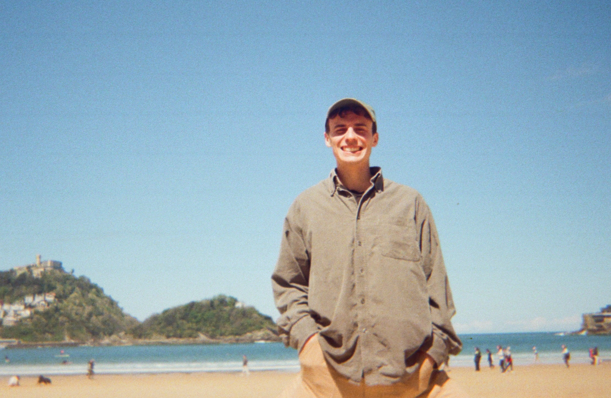

Isaac Reid
I’m a second-year PhD student at the Machine Learning Group within the Cambridge University Engineering Department. I am interested in problems at the interface of ML, statistical physics and applied mathematics.

I’m supervised by Dr Adrian Weller and collaborate closely with Prof. Krzysztof Choromanski (Google Deepmind and Columbia). I’m funded by a Trinity College external studentship.
I obtained my MPhys at Hertford College, Oxford, where I submitted my dissertation on entanglement barriers in dual-unitary quantum circuits, supervised by Dr Bruno Bertini and Prof. Fabian Essler. I’ve also researched simplicity bias in deep neural networks with Prof. Ard Louis at the Rudolf Peierls Centre for Theoretical Physics, Oxford, and Bose-Einstein condensation in active matter with Dr Benoît Mahault and Prof. Ramin Golestanian at the Max Planck Institute for Dynamics and Self Organisation, Göttingen. I worked at this early-stage startup for a year, developing adaptive optics for laser fabrication of qubits inside diamonds.
Contact me at ir337(at)cam.ac.uk.
News:
- Sep 2023: Quasi-Monte Carlo Graph Random Features accepted to NeurIPS as a spotlight paper! ‼️
- May 2023: Accepted onto the IQ Capital Fellowship 🎉
- April 2023: Simplex Random Features accepted to ICML with an oral presentation! 🌴
- Oct 2022: Moving to Cambridge to begin my PhD 🚗
- July 2022: Invited to attend Encaenia ceremony in Oxford 🎓